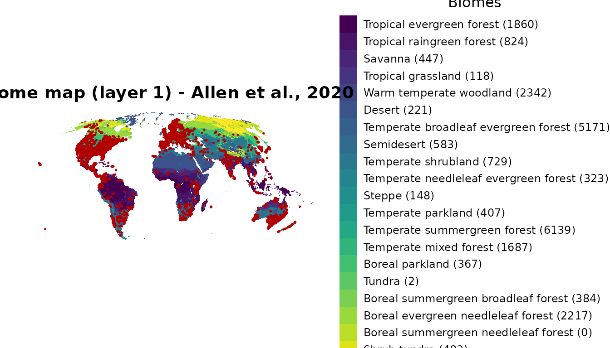
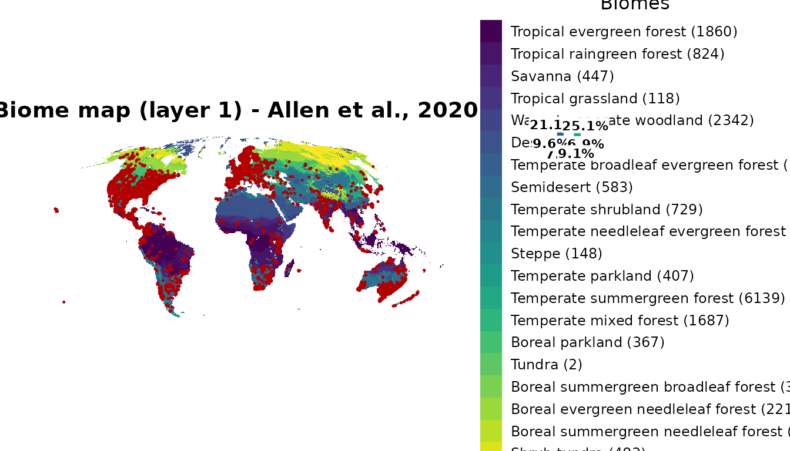

2. Classify, summarize and map
classify-summarize-map.RmdGoal
This is the second of three vignettes. The first one loaded the biome layers, an
occurrence dataset, and used biomes_rank() to pick a layer.
Here we use that layer to:
-
classify occurrences into biomes with
biomes_classify(), -
summarize them per biome with
biomes_tab(), and -
map them with
biomes_visualise().
Throughout we use the bundled biomes_example dataset and
pick a layer by its index (1:31), the same index
biomes_rank() returns as the best layer.
data(biomes_example)1. Classify occurrences into biomes
biomes_classify() takes a table of points (or an
sf / SpatVector) and returns the input
data with the biome assignment appended on the right. You pick
the layer by index; no need to handle SpatRaster objects
yourself.
class_1 <- biomes_classify(biomes_example, layer = 1)
#> Coordinates provided as data.frame, assuming WGS84 as CRS.
#> Classified 29104 record(s) against 1 biome layer(s):
#> - Biome_Inventory_layer_01 (Allen et al., 2020)
head(class_1)
#> genus species countryCode decimalLongitude decimalLatitude
#> 1 Felis Felis catus US -74.60746 40.634316
#> 2 Felis Felis catus US -74.60794 40.634346
#> 3 Acinonyx Acinonyx jubatus KE 35.47705 -1.228576
#> 4 Lynx Lynx rufus US -110.90994 32.298303
#> 5 Lynx Lynx rufus US -81.57826 38.397055
#> 6 Panthera Panthera leo KE 35.44188 -1.372002
#> Biome_Inventory_layer_01_name
#> 1 Temperate summergreen forest
#> 2 Temperate summergreen forest
#> 3 Tropical raingreen forest
#> 4 Warm temperate woodland
#> 5 Temperate summergreen forest
#> 6 Tropical raingreen forestA new column Biome_Inventory_layer_01_name has been
added. Records that fall outside every biome polygon are labelled
"no_biome" rather than dropped, so the counts stay
complete:
table(class_1$Biome_Inventory_layer_01_name, useNA = "ifany")
#>
#> Boreal evergreen needleleaf forest Boreal parkland
#> 2217 367
#> Boreal summergreen broadleaf forest Desert
#> 384 221
#> no_biome Savanna
#> 4652 447
#> Semidesert Shrub tundra
#> 583 483
#> Steppe Temperate broadleaf evergreen forest
#> 148 5171
#> Temperate mixed forest Temperate needleleaf evergreen forest
#> 1687 323
#> Temperate parkland Temperate shrubland
#> 407 729
#> Temperate summergreen forest Tropical evergreen forest
#> 6139 1860
#> Tropical grassland Tropical raingreen forest
#> 118 824
#> Tundra Warm temperate woodland
#> 2 2342Common variations
# Several layers at once, one column per layer
class_multi <- biomes_classify(biomes_example, layer = c(1, 25))
#> Coordinates provided as data.frame, assuming WGS84 as CRS.
#> Classified 29104 record(s) against 2 biome layer(s):
#> - Biome_Inventory_layer_01 (Allen et al., 2020)
#> - Biome_Inventory_layer_25 (Ramankutty & Foley, 1999)
head(class_multi)
#> genus species countryCode decimalLongitude decimalLatitude
#> 1 Felis Felis catus US -74.60746 40.634316
#> 2 Felis Felis catus US -74.60794 40.634346
#> 3 Acinonyx Acinonyx jubatus KE 35.47705 -1.228576
#> 4 Lynx Lynx rufus US -110.90994 32.298303
#> 5 Lynx Lynx rufus US -81.57826 38.397055
#> 6 Panthera Panthera leo KE 35.44188 -1.372002
#> Biome_Inventory_layer_01_name Biome_Inventory_layer_25_name
#> 1 Temperate summergreen forest Temperate deciduous woodland
#> 2 Temperate summergreen forest Temperate deciduous woodland
#> 3 Tropical raingreen forest Savanna
#> 4 Warm temperate woodland Open shrubland
#> 5 Temperate summergreen forest Temperate deciduous woodland
#> 6 Tropical raingreen forest Savanna
# Keep both the raster value and the name
biomes_classify(biomes_example, layer = 1, value = "both") |> head(3)
#> Coordinates provided as data.frame, assuming WGS84 as CRS.
#> Classified 29104 record(s) against 1 biome layer(s):
#> - Biome_Inventory_layer_01 (Allen et al., 2020)
#> genus species countryCode decimalLongitude decimalLatitude
#> 1 Felis Felis catus US -74.60746 40.634316
#> 2 Felis Felis catus US -74.60794 40.634346
#> 3 Acinonyx Acinonyx jubatus KE 35.47705 -1.228576
#> Biome_Inventory_layer_01_value Biome_Inventory_layer_01_name
#> 1 13 Temperate summergreen forest
#> 2 13 Temperate summergreen forest
#> 3 2 Tropical raingreen forest
# Return only the classification columns (drop the input)
biomes_classify(biomes_example, layer = 1, append = FALSE) |> head(3)
#> Coordinates provided as data.frame, assuming WGS84 as CRS.
#> Classified 29104 record(s) against 1 biome layer(s):
#> - Biome_Inventory_layer_01 (Allen et al., 2020)
#> Biome_Inventory_layer_01_name
#> 1 Temperate summergreen forest
#> 2 Temperate summergreen forest
#> 3 Tropical raingreen forest
# Keep NA for off-polygon points instead of the "no_biome" label
class_na <- biomes_classify(biomes_example, layer = 1, na = NA)
#> Coordinates provided as data.frame, assuming WGS84 as CRS.
#> Classified 29104 record(s) against 1 biome layer(s):
#> - Biome_Inventory_layer_01 (Allen et al., 2020)
sum(is.na(class_na$Biome_Inventory_layer_01_name))
#> [1] 4652Appended columns are named after the input layer with the suffixes
_value (raster value) and _name (biome name).
For custom rasters outside the packaged stack, pass a
terra::SpatRaster via biome =.
2. Tabulate occurrences per biome
biomes_tab() counts occurrence records
(one input row = one occurrence) per biome and layer, returning a long
table with one row per (layer, biome) pair:
biomes_tab(class_1)
#> layer biome n
#> 1 Biome_Inventory_layer_01 Boreal evergreen needleleaf forest 2217
#> 2 Biome_Inventory_layer_01 Boreal parkland 367
#> 3 Biome_Inventory_layer_01 Boreal summergreen broadleaf forest 384
#> 4 Biome_Inventory_layer_01 Desert 221
#> 5 Biome_Inventory_layer_01 no_biome 4652
#> 6 Biome_Inventory_layer_01 Savanna 447
#> 7 Biome_Inventory_layer_01 Semidesert 583
#> 8 Biome_Inventory_layer_01 Shrub tundra 483
#> 9 Biome_Inventory_layer_01 Steppe 148
#> 10 Biome_Inventory_layer_01 Temperate broadleaf evergreen forest 5171
#> 11 Biome_Inventory_layer_01 Temperate mixed forest 1687
#> 12 Biome_Inventory_layer_01 Temperate needleleaf evergreen forest 323
#> 13 Biome_Inventory_layer_01 Temperate parkland 407
#> 14 Biome_Inventory_layer_01 Temperate shrubland 729
#> 15 Biome_Inventory_layer_01 Temperate summergreen forest 6139
#> 16 Biome_Inventory_layer_01 Tropical evergreen forest 1860
#> 17 Biome_Inventory_layer_01 Tropical grassland 118
#> 18 Biome_Inventory_layer_01 Tropical raingreen forest 824
#> 19 Biome_Inventory_layer_01 Tundra 2
#> 20 Biome_Inventory_layer_01 Warm temperate woodland 2342It handles multi-layer classifications in the same call:
biomes_tab(class_multi)
#> layer biome n
#> 1 Biome_Inventory_layer_01 Boreal evergreen needleleaf forest 2217
#> 2 Biome_Inventory_layer_01 Boreal parkland 367
#> 3 Biome_Inventory_layer_01 Boreal summergreen broadleaf forest 384
#> 4 Biome_Inventory_layer_01 Desert 221
#> 5 Biome_Inventory_layer_01 no_biome 4652
#> 6 Biome_Inventory_layer_01 Savanna 447
#> 7 Biome_Inventory_layer_01 Semidesert 583
#> 8 Biome_Inventory_layer_01 Shrub tundra 483
#> 9 Biome_Inventory_layer_01 Steppe 148
#> 10 Biome_Inventory_layer_01 Temperate broadleaf evergreen forest 5171
#> 11 Biome_Inventory_layer_01 Temperate mixed forest 1687
#> 12 Biome_Inventory_layer_01 Temperate needleleaf evergreen forest 323
#> 13 Biome_Inventory_layer_01 Temperate parkland 407
#> 14 Biome_Inventory_layer_01 Temperate shrubland 729
#> 15 Biome_Inventory_layer_01 Temperate summergreen forest 6139
#> 16 Biome_Inventory_layer_01 Tropical evergreen forest 1860
#> 17 Biome_Inventory_layer_01 Tropical grassland 118
#> 18 Biome_Inventory_layer_01 Tropical raingreen forest 824
#> 19 Biome_Inventory_layer_01 Tundra 2
#> 20 Biome_Inventory_layer_01 Warm temperate woodland 2342
#> 21 Biome_Inventory_layer_25 Boreal woodland 1775
#> 22 Biome_Inventory_layer_25 Dense shrubland 2415
#> 23 Biome_Inventory_layer_25 Desert and barren 94
#> 24 Biome_Inventory_layer_25 Grassland and steppe 1296
#> 25 Biome_Inventory_layer_25 Mixed woodland 3187
#> 26 Biome_Inventory_layer_25 no_biome 119
#> 27 Biome_Inventory_layer_25 Open shrubland 812
#> 28 Biome_Inventory_layer_25 Savanna 7265
#> 29 Biome_Inventory_layer_25 Temperate deciduous woodland 5731
#> 30 Biome_Inventory_layer_25 Temperate evergreen woodland 3529
#> 31 Biome_Inventory_layer_25 Tropical deciduous woodland 339
#> 32 Biome_Inventory_layer_25 Tropical evergreen woodland 2350
#> 33 Biome_Inventory_layer_25 Tundra 192Because off-polygon points are labelled "no_biome",
every record is counted. To count unique species per
biome instead of records, deduplicate by species before
tabulating:
library(dplyr)
#>
#> Attaching package: 'dplyr'
#> The following objects are masked from 'package:terra':
#>
#> intersect, union
#> The following objects are masked from 'package:stats':
#>
#> filter, lag
#> The following objects are masked from 'package:base':
#>
#> intersect, setdiff, setequal, union
class_1 |>
distinct(species, Biome_Inventory_layer_01_name) |>
biomes_tab()
#> layer biome n
#> 1 Biome_Inventory_layer_01 Boreal evergreen needleleaf forest 7
#> 2 Biome_Inventory_layer_01 Boreal parkland 11
#> 3 Biome_Inventory_layer_01 Boreal summergreen broadleaf forest 5
#> 4 Biome_Inventory_layer_01 Desert 10
#> 5 Biome_Inventory_layer_01 no_biome 13
#> 6 Biome_Inventory_layer_01 Savanna 17
#> 7 Biome_Inventory_layer_01 Semidesert 12
#> 8 Biome_Inventory_layer_01 Shrub tundra 5
#> 9 Biome_Inventory_layer_01 Steppe 11
#> 10 Biome_Inventory_layer_01 Temperate broadleaf evergreen forest 25
#> 11 Biome_Inventory_layer_01 Temperate mixed forest 10
#> 12 Biome_Inventory_layer_01 Temperate needleleaf evergreen forest 9
#> 13 Biome_Inventory_layer_01 Temperate parkland 7
#> 14 Biome_Inventory_layer_01 Temperate shrubland 18
#> 15 Biome_Inventory_layer_01 Temperate summergreen forest 10
#> 16 Biome_Inventory_layer_01 Tropical evergreen forest 20
#> 17 Biome_Inventory_layer_01 Tropical grassland 11
#> 18 Biome_Inventory_layer_01 Tropical raingreen forest 22
#> 19 Biome_Inventory_layer_01 Tundra 1
#> 20 Biome_Inventory_layer_01 Warm temperate woodland 143. Map occurrences over a biome layer
biomes_visualise() draws the chosen biome layer as a
categorical raster, overlays the occurrence points, and appends the
per-biome record counts to the legend labels (so they match
biomes_tab() exactly).
biomes_visualise(biomes_example, layer = 1)
#> <SpatRaster> resampled to 5e+05 cells.
By default the map shows the biome colours, the points, and a legend
on the right. The pie inset is off by default
(pie = FALSE); switch it on to show the share of records
per biome (segments ≥ 5 % are labelled):
biomes_visualise(biomes_example, layer = 1, pie = TRUE)
#> <SpatRaster> resampled to 5e+05 cells.
Drop the legend for a clean publication figure:
biomes_visualise(biomes_example, layer = 1, legend = FALSE)The function returns a ggplot object (or a
cowplot object when pie = TRUE), so you save
it the usual way:
p <- biomes_visualise(biomes_example, layer = 1)
ggplot2::ggsave("map_layer_01.jpg", p, width = 13, height = 8, dpi = 600)Next
You have now run the full building-block workflow: classify →
tabulate → map. The third vignette
shows how biomes_full() chains exactly these steps (plus
the ranking from vignette 1) into a single call.